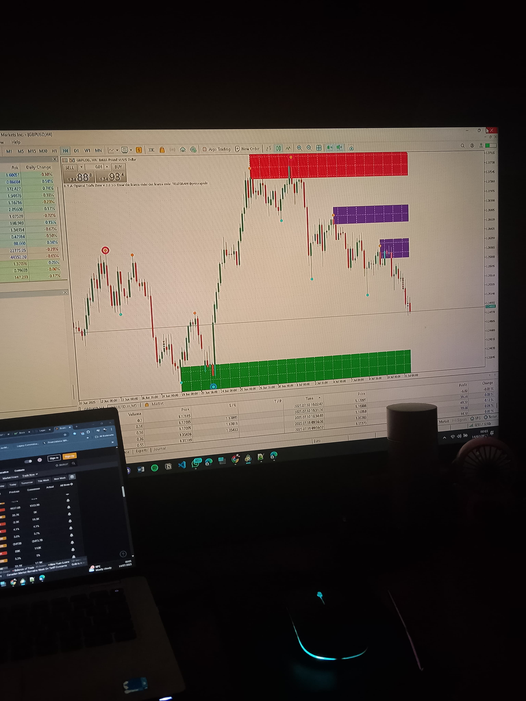

Disclaimer: AutoZone FX is purely a technical analysis tool that analyzes both Forex and Deriv synthetic markets — including popular pairs like Volatility 75. However, as a bonus, all buyers are added to a private group where we drop fundamental market breakdowns for those trading the Forex market.
Join for $49 via M-PESAThis software identifies tested support (green zones) and resistance (red zones) for crystal-clear entries and exits. Plug it into your MT5 and trade like a sniper.
Remember: It’s not technicals that move the markets, it’s fundamentals.
News, interest rates, and economic data cause real price movement.
AutoZone FX helps you know where to enter and exit — but the direction is often driven by fundamentals.
That’s why the private WhatsApp group you get after purchase is such a powerful bonus: we break down market-moving events, so you trade smarter, not just technically.
One-Time Payment – KES 6,500 (~$49)
📲 Pay via M-PESA to: 0799647816 (TraderJoew)
📧 Then send proof to: joejowk15@gmail.com
📩 You'll receive: